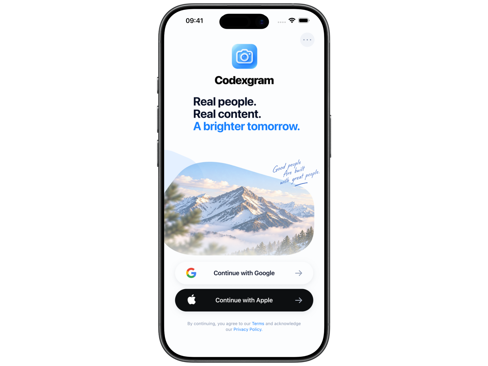
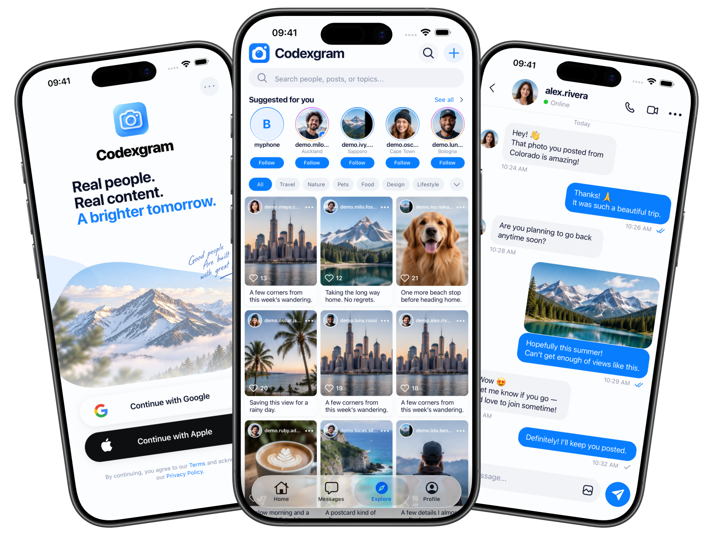

01 / SHAREMake room
Make room
for the moment.
Post a photo or short video with a caption. Keep your profile and the things you share together.
Share the view, the people, the small in-between things. Codexgram brings photos, short videos, and familiar faces into one simple social space.
A feed that feels familiar.
Follow people. Find a new point of view.

A social space for real life
Build a profile that feels like you, follow the people you care about, and see what they’re sharing. A simple loop: notice, capture, share.
What you can do
A few thoughtful ways to share a day, catch up with your circle, and discover what others see.
Post a photo or short video with a caption. Keep your profile and the things you share together.
Share a photo story that stays in the active view for 24 hours.
24 hour storiesBrowse recent posts, explore profiles, and follow people whose photos make you pause.

Start with what you notice
Codexgram gives those moments somewhere to land.
Back to the beginning